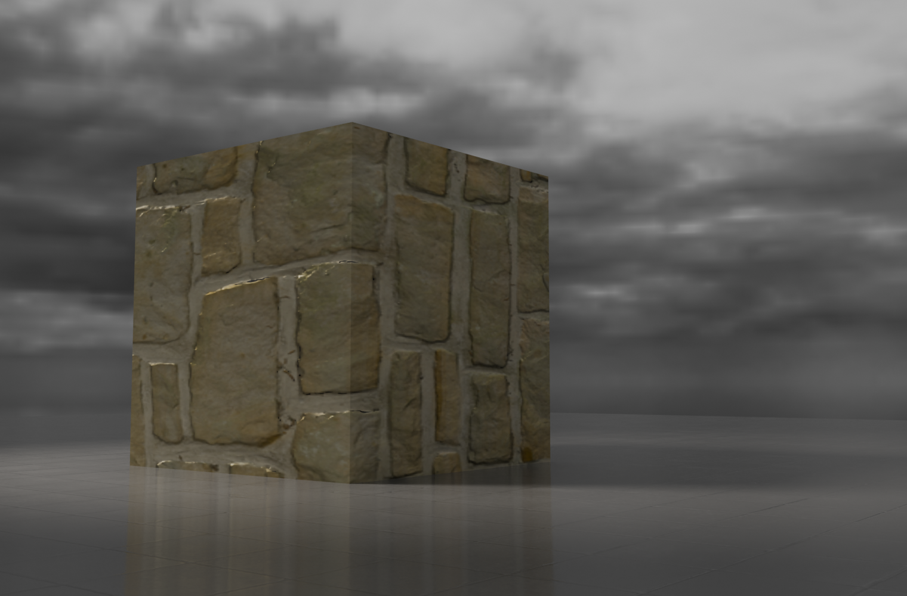
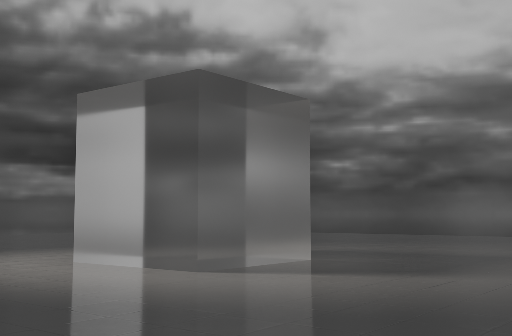

Surface level information relating to the usage of both rough and transmissive materials in website design.


We can use material properties to diagnose the fundamental difference between these two materials. Roughness scatters reflecting light rays which creates less shine, a clear characteristic of natural stone. Some rough materials are still capable of reflection thanks to specular determining how much is possible. Transmission dictates how clearly light can pass through something, a clear characteristic of most glass. Depending on the transmissive material, light may bounce around internally, creating more diffused shadows. Using this knowledge, try seeing which materials have more roughness, specular, transmission, and diffusion.